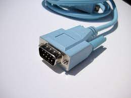
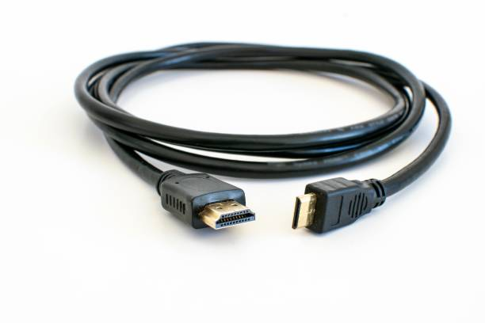
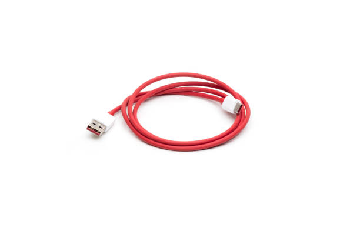
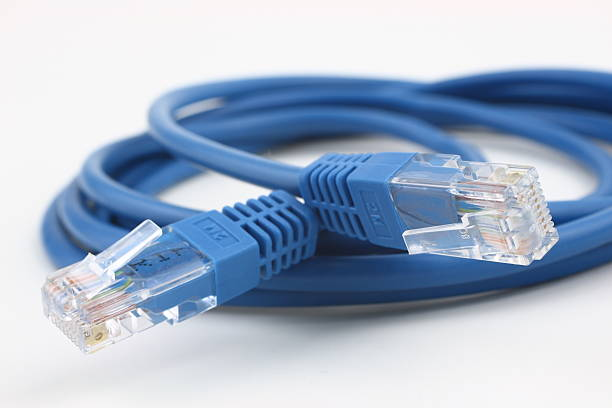
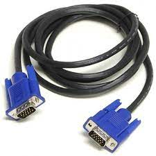

Web Page Design & Computer Peripherals
Input & Output Cables

The input and output units, that is the devices that allow the introduction of data and the display of the results (keyboard, mouse, monitor, printers, etc.), are external to the Motherboard, and are connected through appropriate connectors, called ports of connection or input and output (I/O).
In general, each port has the characteristics suitable for the device to be connected. In reality the manufacturers try to standardize the devices so as not to need a myriad of different doors.
Types Of Input And Output Cabless
- Serial Cable
- HDMI Cable
- USB Cable
- PS/2 Cable
- Ethernet Cable
- VGA Cable

SERIAL CABLE:
A serial cable is a cable used to transfer information between two devices using a
serial communication protocol. The form of connectors depends on the particular serial port used. A cable wired for connecting two DTEs
directly is known as a null modem cable.
The maximum working length of a cable varies depending on the characteristics of the transmitters and receivers, the baud rate on the cable, and the capacitance and electrical impedance of the cable.

HDMI CABLE:
High-Definition Multimedia Interface (HDMI) is a proprietary audio/video interface for transmitting uncompressed video data
and compressed or uncompressed digital audio data from an HDMI-compliant source device, such as a display controller, to a compatible computer
monitor, video projector, digital television, or digital audio device.HDMI is a digital replacement for analog video standards.
Several versions of HDMI have been developed and deployed since the initial release of the technology, but all use the same cable and connector. Other than improved audio and video capacity, performance, resolution and color spaces, newer versions have optional advanced features such as 3D, Ethernet data connection, and CEC extensions.

USB CABLE:
Universal Serial Bus (USB) is an industry standard that establishes specifications for
cables, connectors and protocols for connection, communication and power supply (interfacing) between computers, peripherals and other
computers. A broad variety of USB hardware exists, including 14 different connector types, of which USB-C is the most recent.
First released in 1996, the USB standards are maintained by the USB Implementers Forum (USB-IF). The four generations of USB are: USB 1.x, USB 2.0, USB 3.x, and USB4.USB was designed to standardize the connection of peripherals to personal computers, both to communicate with and to supply electric power. It has largely replaced interfaces such as serial ports and parallel ports, and has become commonplace on a wide range of devices. Examples of peripherals that are connected via USB include computer keyboards and mice, video cameras, printers, portable media players, mobile (portable) digital telephones, disk drives, and network adapters. USB connectors have been increasingly replacing other types as charging cables of portable devices.
The Universal Serial Bus was developed to simplify and improve the interface between personal computers and peripheral devices, such as cell phones, computer accessories, and monitors, when compared with previously existing standard or ad hoc proprietary interfaces.

PS2 CABLE:
PS/2 is a now-defunct, standard type of connection used to connect keyboards, mice, and
other input devices to a computer.
Generally, it refers to the types of cables (PS/2 cable), ports (PS/2 port), and other connectors used with these types of keyboards and
mice.
These ports are round and consist of 6 pins. In most cases, purple PS/2 ports are intended to be used by keyboards, while green ones are to
be used by mice.
This connection type was first introduced in 1987 with the IBM Personal System/2 series of personal computers. The standard has been completely replaced by the much faster, and more flexible, USB standard in consumer machines. PS/2 was officially declared as a legacy port in the year 2000, paving the way for USB's complete takeover.

Ethernet CABLE:
An Ethernet cable is a common type of network cable used with wired networks.
Ethernet cables connect devices such as PCs, routers, and switches within a local area network.
These physical cables are limited by length and durability. If a network cable is too long or of poor quality, it won't carry a good network
signal. These limits are one reason there are different types of Ethernet cables that are optimized to perform certain tasks in specific
situations.
An Ethernet cable resembles a traditional phone cable but is larger and has more wires. Both cables share a similar shape and plug, but an Ethernet cable has eight wires, while phone cables have four. Ethernet cable connectors are also larger.Ethernet cables come in many different colors, but phone cables are usually grey. Ethernet cables plug into Ethernet ports, which are larger than phone cable ports. An Ethernet port on a computer is accessible through the Ethernet card on the motherboard. This port is usually on the back of a desktop computer, or on the side of a laptop.

VGA CABLE:
VGA stands for Video Graphics Array. A VGA cable is a device used to transfer video
signals. It does this by acting as a link between the computer and the monitor or between the computer and the television screen. The
video graphic cable comes in two types, male and female connector. It is made of high-quality materials and carries an unconditional
warranty. Chiefly, it is an electronic connector with three rows of 15 pins on it.
A VGA cable has multiple uses in the electronic field. It is used as a connector in electronic devices like laptops, televisions, monitors, video cards, and other electronic devices. It is used to connect and send signals between computers and monitors, between computers and televisions, and between computers and laptops.
The video graphics array cable works by carrying the electronic signals and data from one hardware device to another. The signals are normally in form of video signals. The cable functions by carrying analog components of the red, green, blue, horizontal, vertical, and VESA data.